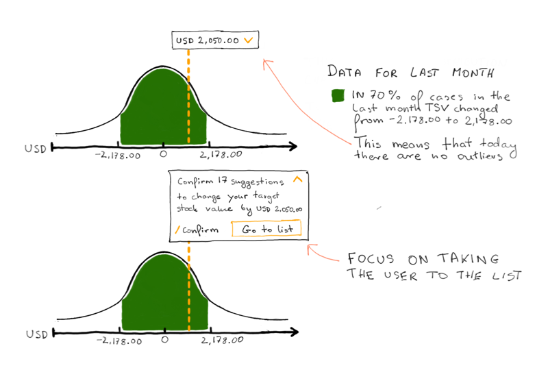
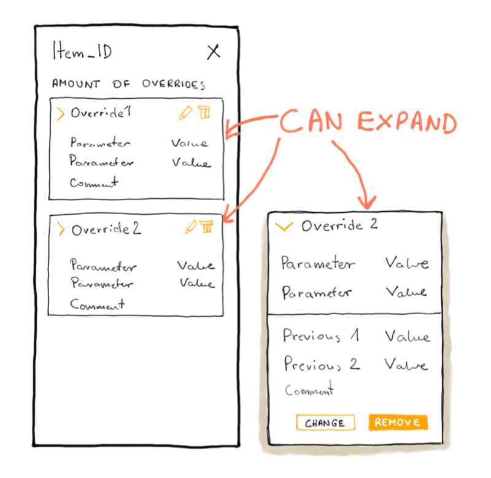

Syncron is a Swedish company that provides a range of IT solutions focused on after-sales service.
I am the lead designer for a new version of our core product - Inventory. My job is divided into two workstreams. The first is focused on overall product evolution (new and better ways for the users to achieve their goals and solve problems). The second stream is design and dev support for the current roadmap.
Each project is a little bit different. Here’s a summary of my day to day activities.
I had to cut a lot of information from the specifications shown below.
I will be happy to discuss these projects in person.
Users review suggestions from our system on a daily basis. A significant number of users get 100 and more suggestions per day. It takes a long time to go through each and every one of them in search for an outlier. In most cases, users are accepting all suggestions but the ones which are either exceptionally expensive or have a large number of items.
How can we improve the system so that a large number of suggestions can be easily divided into most commonly accepted and outliers?
During shadowing sessions, we observed that the users have a cost value above which they are very careful to accept the suggestion. The value changes based on the size of the company. For some it is everything that costs more than 50 USD and for others 1000 USD. Any suggestion below those values can be accepted without having to analyze it carefully.
We came up with 3 level analysis tool which allows the user to go through the suggestions on 3 different levels of detail. 1st level shows a normal distribution chart, 2nd level divides the suggestions into cost value buckets and 3rd level is just a list of suggestions in a table.
During testing the biggest challenge we faced was a lack of trust from users that the 1st level of detail gives them accurate information. The users were afraid that within the “green” region there can be some suggestions which they don’t want even though in the past they accepted those suggestions from the list view.
We conducted many user interviews to identify what is the root cause of the mistrust. As a result, we decided to earn the trust of the users by not allowing them to accept suggestions on the first level of analysis. Instead the first level of analysis would simply divide the suggestions into buckets “Safe to accept” and “Need revision”. By going to the first bucket, the users wouldn’t need to spend as much time analyzing the suggestions. They could just briefly look through the list and use the accept en masse button. We hypothesized that in time, users will learn to trust the system and begin accepting the suggestions without having to go through the list.
Our system gives users many different suggestions about their inventory. It may suggest the user to stop stocking a particular item. Or to decrease the order level. The user, however, has the option to override the suggestion. It can happen for a variety of reasons. Maybe the user knows that a client will come who wants to get a specific amount of items as a one time deal and they want to make sure the right amount of stock will be available for purchase. If the user accepted the suggestion to decrease the stock, the workers could’ve returned unnecessary items from the warehouse and as a result the client would not be able to get their order.
The downside of applying an override is a decrease of compliance KPI which can result in the removal of return rights for items with overrides.
The only way for us to ensure the user knows about the risks of using an override is the proper placement of information about those risks during the process of applying an override.
The first version of the override process was designed and implemented inline.
Because the first version didn’t perform well after implementation we decided to move the entire process to a sidebar.
Initial tests are promising. Lessons learned during the previous implementation told us we need to test this feature more extensively. We have two sessions planned for June and July. As well as a quantitative test which will be done in Axure+HoJar on a much larger group of users.
During testing, the first version performed well, the users were able to complete their task with minimal effort and generally understood what was happening on the screen. However, when we finally implemented this feature and released it to the public, we started getting a lot of complaints that it’s not clear enough when the overrides are actually applied and what does it mean for the user.
We should’ve tested this feature on a wider audience instead of a small group of 6 users. Perhaps an interactive prototype with analytic tools could’ve given us a better answer.
Our system is designed for a very specific type of user - an expert in supply chain management. Regardless, we still need to provide a way for new users to familiarize themselves with the system.
Go to specificationNormal workflow consists of confirming or rejecting suggestions for policy changes and order lines. However, sometimes users need to submit rush orders. That's when this features comes in handy.
Go to specificationChecking KPI's is one of the most important tasks for our users. This page allows users to check their performance and take necessary actions if a particular KPI is falling.
Go to specificationFiltering, sorting, search, exporting, replacing orders, returns process, text truncation and many, many more smaller features and functionalities.